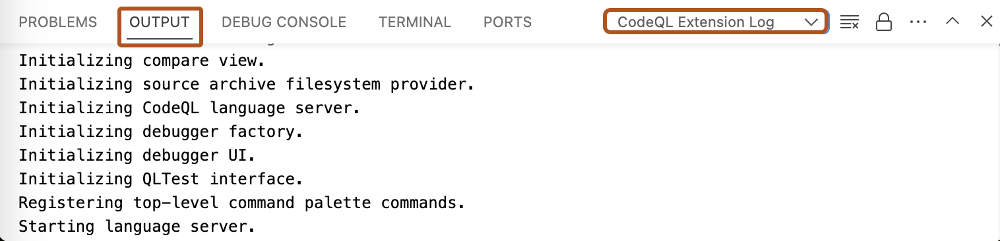

If you need to troubleshoot problems with CodeQL for Visual Studio Code, there are several logs you can access.
In Visual Studio Code, open the "Output" window.
Use the dropdown to select the log view you need. For example, "CodeQL Extension Log".
